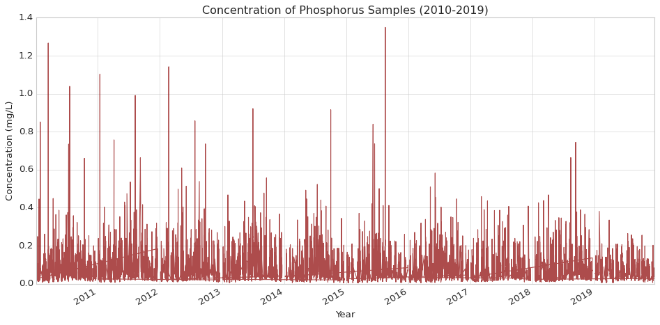
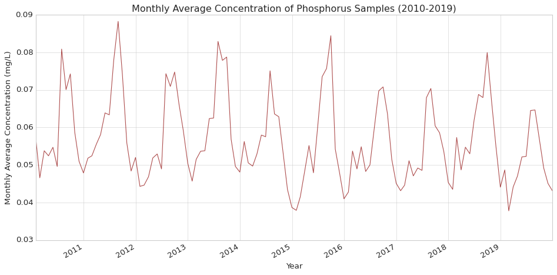
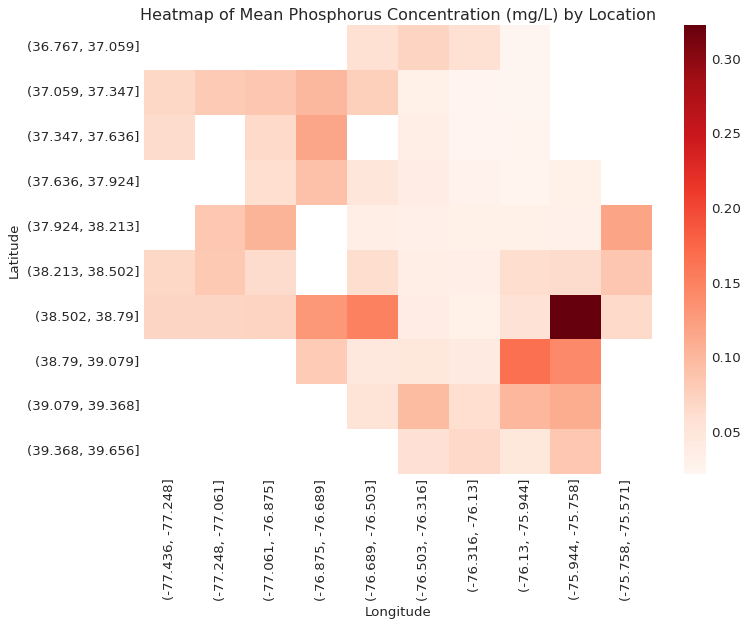
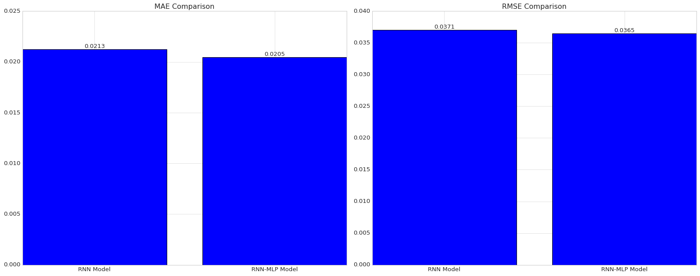
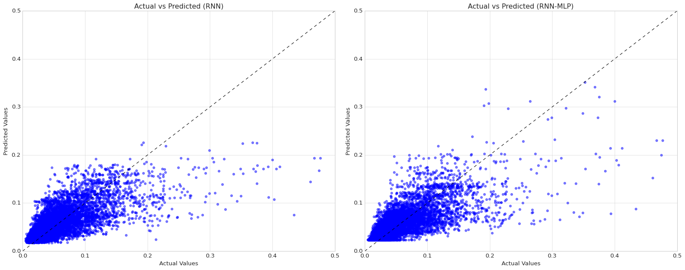

Regression Models to predict Phosphorus Concentration based on Time and Location
In this blog post, I build two models to explore potential advantages of adding an additional hidden layer to a traditional Recurrent Neural Network (RNN) architecture.
In this blog post, I’ll build and compare two deep learning models that predict phosphorus concentration in Chesapeake Bay tidal regions based on the time and location of sample.
Background
This analysis will focus on phosphorus pollution. Phosphorus, along with nitrogen, are the two major pollutants responsible for algal blooms in the Chesapeake Bay. A 2022 study found that agricultural runoff was the largest source of nutrient pollution, accounting for 48% of nitrogen and 27% of phosphorus in the Chesapeake Bay (Chesapeake Progress), n.d.). Both phosphorus and nitrogen also get to the Bay as a result of urban and suburban runoff, wastewater treatment plants releasing treated water, and natural sources like runoff from forests and wetlands.
Data
Yearly water quality data on the Chesapeake Bay’s tidal and non-tidal regions going back to 1984 is publicly available on the Chesapeake Bay Program (CBP) DataHub (Chesapeake Bay Program DataHub, n.d.).
For my analysis, I will be using 2010 to 2019 data collected at 143 different monitoring stations positioned throughout the Chesapeake Bay tidal regions, which includes the mainstem Bay and tributary components. Across the 10 years that we are looking at, we’ll have a total of 43,590 phosphorus observations.
Data import
Code
import numpy as npimport pandas as pdimport matplotlib.pyplot as pltimport seaborn as snsimport requestsfrom io import BytesIOfrom sklearn.model_selection import train_test_splitfrom sklearn.preprocessing import StandardScalerfrom sklearn.metrics import mean_absolute_error, mean_squared_errorfrom tensorflow import keras
Code
# Create a list of data URLsexcel_urls = ['https://datahub-content.chesapeakebay.net/traditional_annual_tidal_02jun21/2019_CEDR_tidal_data_01jun21.xlsx','https://datahub-content.chesapeakebay.net/traditional_annual_tidal_02jun21/2018_CEDR_tidal_data_01jun21.xlsx','https://datahub-content.chesapeakebay.net/traditional_annual_tidal_02jun21/2017_CEDR_tidal_data_11oct18.xlsx','https://datahub-content.chesapeakebay.net/traditional_annual_tidal_02jun21/2016_CEDR_tidal_data_15jun17.xlsx','https://datahub-content.chesapeakebay.net/traditional_annual_tidal_02jun21/2015_CEDR_tidal_data_15jun17.xlsx','https://datahub-content.chesapeakebay.net/traditional_annual_tidal_02jun21/2014_CEDR_tidal_data_15jun17.xlsx','https://datahub-content.chesapeakebay.net/traditional_annual_tidal_02jun21/2013_CEDR_tidal_data_15jun17.xlsx','https://datahub-content.chesapeakebay.net/traditional_annual_tidal_02jun21/2012_CEDR_tidal_data_15jun17.xlsx','https://datahub-content.chesapeakebay.net/traditional_annual_tidal_02jun21/2011_CEDR_tidal_data_15jun17.xlsx','https://datahub-content.chesapeakebay.net/traditional_annual_tidal_02jun21/2010_CEDR_tidal_data_15jun17.xlsx']# Create an empty list to store data framesdfs = []# Loop through each URL, read the Excel file directly into pandas, and append to list of data framesfor url in excel_urls:# Get the content of the Excel file response = requests.get(url)# Read the Excel file directly from the content wq_data = pd.read_excel(BytesIO(response.content), sheet_name=0) dfs.append(wq_data)# Combine all data frames into a single data framewq_data_combined = pd.concat(dfs, ignore_index=True)
Data exploration
Code
# Wrangle data for relevant column variables, and filter for TP (total phosphorus)phos_data = wq_data_combined[["SampleDate", "Parameter", "MeasureValue", "Latitude", "Longitude"]]phos_data = phos_data[phos_data["Parameter"] =="TP"]phos_data.info()
# Initialize figureplt.figure(figsize=(12, 6))# Plot phosphorus dataplt.plot(phos_data['SampleDate'], phos_data['MeasureValue'], label='Total Phosphorus (TP)', color='darkred', alpha=0.7)# Customize the plotplt.title('Concentration of Phosphorus Samples (2010-2019)')plt.xlabel('Year')plt.ylabel('Concentration (mg/L)')# Rotate and align tick labelsplt.gcf().autofmt_xdate()# Use tight layout to ensure everything fits without overlappingplt.tight_layout()plt.show()

Code
# Resample to monthly frequency and calculate the meanmonthly_avg = phos_data.resample('M').mean()# Initialize figureplt.figure(figsize=(12, 6))# Plot monthly average phosphorus dataplt.plot(monthly_avg.index, monthly_avg['MeasureValue'], color='darkred', alpha=0.7)# Customize the plotplt.title('Monthly Average Concentration of Phosphorus Samples (2010-2019)')plt.xlabel('Year')plt.ylabel('Monthly Average Concentration (mg/L)')# Rotate and align tick labelsplt.gcf().autofmt_xdate()# Use tight layout to ensure everything fits without overlappingplt.tight_layout()plt.show()

Code
# Bin latitude and longitude into groupsphos_data_copy = pd.DataFrame(phos_data)phos_data_copy['Latitude Group'] = pd.cut(phos_data['Latitude'], bins=10)phos_data_copy['Longitude Group'] = pd.cut(phos_data['Longitude'], bins=10)# Pivot the data to create a heatmapheatmap_data = phos_data_copy.pivot_table(index='Latitude Group', columns='Longitude Group', values='MeasureValue', aggfunc='mean')# Initialize the figureplt.figure(figsize=(10, 8))# Set styleplt.style.use('seaborn-whitegrid') # You can choose 'seaborn-dark', 'seaborn-notebook', or any other style# Plot heatmapsns.heatmap(heatmap_data, cmap='Reds')# Customize the plotplt.title('Heatmap of Mean Phosphorus Concentration (mg/L) by Location')plt.xlabel('Longitude')plt.ylabel('Latitude')plt.tight_layout()plt.show()

Data pre-processing
Code
# Create numerical feature for days since start datephos_data['Days'] = (phos_data['SampleDate'] - phos_data['SampleDate'].min()).dt.days# Prepare features and targetX = phos_data[['Days', 'Latitude', 'Longitude']]y = phos_data['MeasureValue']# Split the dataX_train, X_test, y_train, y_test = train_test_split(X, y, test_size=0.2, random_state=42)# Scale the featuresscaler = StandardScaler()X_train_scaled = scaler.fit_transform(X_train)X_test_scaled = scaler.transform(X_test)# Reshape input for RNN (samples, time steps, features)X_train_rnn = X_train_scaled.reshape((X_train_scaled.shape[0], 1, X_train_scaled.shape[1]))X_test_rnn = X_test_scaled.reshape((X_test_scaled.shape[0], 1, X_test_scaled.shape[1]))
Basic RNN model
A Recurrent Neural Network (RNN) is a complex Artificial Neural Network (ANN) architecture that can be applied to sequence prediction for classification and regression tasks (in addition, they are often applied to sequence prediction for text data in generative modeling). Specifically, I will use the Long Short-Term Memory (LSTM) network, which many experts consider to be the most useful version of RNNs.
Code
def create_rnn_model(input_shape): model = keras.Sequential([ keras.layers.LSTM(64, return_sequences=True, input_shape=input_shape), keras.layers.LSTM(64), keras.layers.Dense(1) ])return model# Create the RNN modelrnn_model = create_rnn_model((1, 3)) # (time steps, features)# Compile the modelrnn_model.compile(optimizer='adam', loss='mse')# Print model summaryrnn_model.summary()
A Multilayer Perceptron (MLP) is a simple and flexible ANN architecture that can be applied to an extremely wide range of predictive classification and regression tasks involving tabular data. A simple MLP for regression tasks could just include two hidden layers: a dense layer with a specialized activation function (e.g., ReLU function), followed by a one-neuron dense layer.
The goal of our analysis is to assess the value of combining a RNN with a MLP for the task of predicting phosphorus concentration, so to add on to our RNN model, we will just add a very simple 16-neuron dense layer with the ReLU activation function before our one-neuron dense layer.
# Create figure and subplotsfig, axes = plt.subplots(1, 2, figsize=(20, 8))# Plot for the first model (left subplot)ax1 = axes[0]# Compare MAEbars1 = ax1.bar(['RNN Model', 'RNN-MLP Model'], [rnn_mae, hybrid_mae])ax1.set_title('MAE Comparison')# Add text annotations for MAEfor bar in bars1: yval = bar.get_height() ax1.text(bar.get_x() + bar.get_width()*3/7, yval, round(yval, 4), va='bottom') # va='bottom' aligns text at the bottom of the bar# Plot for the second model (right subplot)ax2 = axes[1]# Compare RMSEbars2 = ax2.bar(['RNN Model', 'RNN-MLP Model'], [rnn_rmse, hybrid_rmse])ax2.set_title('RMSE Comparison')# Add text annotations for RMSEfor bar in bars2: yval = bar.get_height() ax2.text(bar.get_x() + bar.get_width()*3/7, yval, round(yval, 4), va='bottom') # va='bottom' aligns text at the bottom of the bar# Adjust layoutplt.tight_layout()# Show the plotplt.show()

Code
# Create figure and subplotsfig, axes = plt.subplots(1, 2, figsize=(20, 8))# Plot for the first model (left subplot)ax1 = axes[0]# Add a line y = xx = np.linspace(0, 1.4, 100)ax1.plot(x, x, color='black', linestyle='--', linewidth=1)# Scatter plot for Basic RNN model predictionsax1.scatter(y_test, rnn_predictions, color='blue', alpha=0.5, label='RNN')# Set axis labels and titleax1.set_xlabel('Actual Values')ax1.set_ylabel('Predicted Values')ax1.set_title('Actual vs Predicted (RNN)')# Set axis limitsax1.set_xlim(0, 0.5)ax1.set_ylim(0, 0.5)# Plot for the second model (right subplot)ax2 = axes[1]# Add a line y = xax2.plot(x, x, color='black', linestyle='--', linewidth=1)# Scatter plot for Hybrid model predictionsax2.scatter(y_test, hybrid_predictions, color='blue', alpha=0.5, label='RNN-MLP')# Set axis labels and titleax2.set_xlabel('Actual Values')ax2.set_ylabel('Predicted Values')ax2.set_title('Actual vs Predicted (RNN-MLP)')# Set axis limitsax2.set_xlim(0, 0.5)ax2.set_ylim(0, 0.5)# Adjust layoutplt.tight_layout()# Show the plotplt.show()

Conclusion
From adding an additional 16-neuron dense layer with a ReLU activation function to our LSTM network architecture, we saw a 3.8% decrease in MAE and a 1.6% decrease in RMSE, suggesting that there are potential advantages from using a hybrid RNN-MLP model in this context. Looking at side-by-side scatter plots of actual values and predicted values, it appears the reductions in MAE and RMSE can be attributed to enhanced outlier detection among actual concentration values greater than 0.15 mg/L.
Further analysis would be helpful to see how employing cross-validation to tune for number of ReLU layers and number of neurons per layer (in LSTM layers and ReLU layers) might impact these results. Unfortunetly, I did not have access to an accelerator for this project, so I was unable to conduct an analysis with that level of granularity.
Citation
BibTeX citation:
@online{ghanadan2024,
author = {Ghanadan, Linus},
title = {Regression {Models} to Predict {Phosphorus} {Concentration}
Based on {Time} and {Location}},
date = {2024-07-16},
url = {https://linusghanadan.github.io/blog/2024-7-16-post.html},
langid = {en}
}